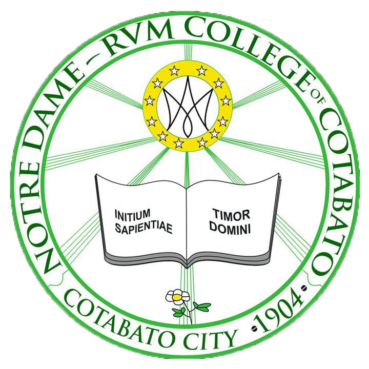
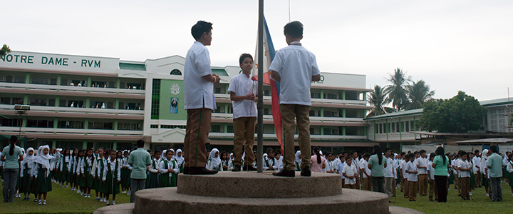
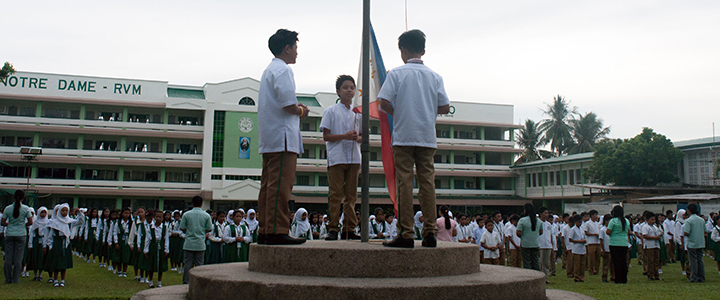

Notre Dame - RVM College of Cotabato

 


Admission
To facilitate a systematic admission to ND-RVMCC, the school has established policies that need to be strictly observed. Both in-coming High School Freshmen, transferees and returning Marians are required to go through assessment, examination, interview and registration as needed.
Requirements
For In-coming High School Freshmen
1. Placement Test Results
2. Permit to enroll (PTE) from the Guidance Center
3. Form 138 (Report Card)
4. Certificate of Good Moral Character
5. Photocopy of Birth Certificate (NSO)
6. 2 pcs. 1×1 ID pictures
7. Photocopy of baptismal Certificate (for Catholics)
Transferees/ New Students
1. Placement Test Results
2. Permit to enroll (PTE) from the Guidance Center
3. Form 138 (Report Card)
4. Certificate of Good Moral Character
5. Photocopy of Birth Certificate (NSO)
6. 2 pcs. 1×1 ID pictures
7. Photocopy of baptismal Certificate (for Catholics)
8. Letter of Recommendation from the Principal of previous school
Old/ Returning Marians
1. Form 138 (Report Card)
2. 2 pcs. 1×1 ID pictures
3. Letter of Recommendation from the Principal of previous school
Admission Procedure
Assessment
Submit a photocopy of your Form 138 (Report Card) to the Registrar for evaluation purposes.
Examination
1. Pay P75.00 to the Cashier’s Office and get your Entrance Examination Permit.
2. Proceed to the Guidance and Services Center and present your Entrance Examination Permit to the Examiner.
3. You will be given a schedule and be sure to take the exam on the schedule given to you.
4. The examination covers general aptitude and essay items.
5. Get the examination result two (2) days after taking the exam.
6. Permit to Enrol (PTE) will be released to those allowed to register.
7. Those without Permit to Enrol (PTE) will proceed to the Principal’s Office for interview.
Interview
Go for interview with your parents/ guardians to:
1. Subject Coordinators in English and/ or Math (for those with academic concerns)
2. Prefect of Discipline (POD)(for those with concerns in discipline)
Important: A two week Summer Bridge Program for identified students is a requirement for official admission to the school.
Registration/ Enrollment Procedure
Step 1: Submit the following requirements to the Enrolling Officer stationed at the Mother Tan Building
1. Permit to enroll (PTE) from the Guidance Center
2. Form 138 (Report Card)
3. Certificate of Good Moral Character
4. Photocopy of Birth Certificate (NSO)
5. 2 pcs. 1×1 ID pictures
6. Photocopy of Baptismal Certificate (for Catholics)
7. Letter of Recommendation from the Principal for Transferees
Step 2: Fill out the Enrollment Form completely and correctly and have it checked by the Enrolling Officer
Step 3: Proceed to the Registrar’s Office and present accomplished form and get your priority number for the Cashier’s purpose.
Step 4: Proceed to the Cashier’s Office for payment as soon as the priority number is called.
Step 5: Proceed to the Library and get your textbooks. Present your receipt of payment to the Librarian.
Congratulations and Welcome to your new school!
Financial Policies
Payments and Refunds
Four periodical examinations are scheduled during the entire school year. You are expected to comply with the financial requirements due forn that certain examination and be able to present an admission card duly signed by the Cashier before taking the exams.
No transfer credential will be issued to the student with unpaid financial obligations.
“A student enrolled in a private school shall be considered to have registered for the entire school term. A student who transfers or otherwise withdraws, in writing, within two weeks after the beginning of classes and who has already paid the pertinent tuition fee and other school charges in full or any length longer than one month may be charged the equivalent of ten percent (10%) of the total amount due for the term if she/ he withdraws within the first week of classes regardless of whether or not she/ he has actually attended classes in the school. The student may be charged the full amount of the tuition fee and other school charges for the entire school term of he/ she withdraws any time after the second week of the classes. If the transfer or withdrawal of the student is due to justifiable reasons, she/ he may be charged the pertinent school fees only up to and including the last month of her/ his attendance, at the discretion of the school.” (Chapter VII, Articles 107, Private Education Code: November, 1975)
A student who withdraws or drops out should notify officially the Registrar and the Cashier, otherwise he/ she will be billed for the whole school year’s fees. No withdrawal is allowed starting on the month of February.